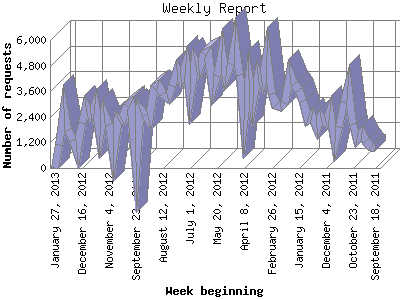

The Weekly Report identifies the activity for each week within the report
time frame. Remember that one page hit can result in several server requests
as the images for each page are loaded.
Note: Depending on the
report time frame for this report the first and last week may not represent
a full seven day week, resulting in lower hits.

| Week beginning | Number of requests | Number of page requests | |
|---|---|---|---|
| 1. | September 18, 2011 | 919 | 151 |
| 2. | September 25, 2011 | 998 | 140 |
| 3. | October 2, 2011 | 1,275 | 185 |
| 4. | October 9, 2011 | 1,664 | 284 |
| 5. | October 16, 2011 | 1,368 | 215 |
| 6. | October 23, 2011 | 2,084 | 294 |
| 7. | October 30, 2011 | 3,862 | 555 |
| 8. | November 6, 2011 | 3,090 | 461 |
| 9. | November 13, 2011 | 1,945 | 340 |
| 10. | November 20, 2011 | 1,234 | 243 |
| 11. | November 27, 2011 | 2,681 | 513 |
| 12. | December 4, 2011 | 2,148 | 424 |
| 13. | December 11, 2011 | 2,378 | 352 |
| 14. | December 18, 2011 | 1,883 | 320 |
| 15. | December 25, 2011 | 2,490 | 360 |
| 16. | January 1, 2012 | 2,287 | 318 |
| 17. | January 8, 2012 | 3,130 | 465 |
| 18. | January 15, 2012 | 3,675 | 533 |
| 19. | January 22, 2012 | 3,927 | 618 |
| 20. | January 29, 2012 | 4,417 | 734 |
| 21. | February 5, 2012 | 3,065 | 462 |
| 22. | February 12, 2012 | 2,867 | 439 |
| 23. | February 19, 2012 | 2,952 | 478 |
| 24. | February 26, 2012 | 3,479 | 519 |
| 25. | March 4, 2012 | 5,360 | 766 |
| 26. | March 11, 2012 | 4,041 | 620 |
| 27. | March 18, 2012 | 4,392 | 640 |
| 28. | March 25, 2012 | 3,040 | 429 |
| 29. | April 1, 2012 | 4,168 | 614 |
| 30. | April 8, 2012 | 2,261 | 325 |
| 31. | April 15, 2012 | 4,375 | 686 |
| 32. | April 22, 2012 | 5,912 | 828 |
| 33. | April 29, 2012 | 4,880 | 772 |
| 34. | May 6, 2012 | 4,295 | 631 |
| 35. | May 13, 2012 | 5,463 | 893 |
| 36. | May 20, 2012 | 4,297 | 705 |
| 37. | May 27, 2012 | 3,769 | 600 |
| 38. | June 3, 2012 | 5,419 | 803 |
| 39. | June 10, 2012 | 5,331 | 788 |
| 40. | June 17, 2012 | 4,639 | 663 |
| 41. | June 24, 2012 | 5,025 | 743 |
| 42. | July 1, 2012 | 3,428 | 565 |
| 43. | July 8, 2012 | 4,926 | 752 |
| 44. | July 15, 2012 | 4,241 | 681 |
| 45. | July 22, 2012 | 4,615 | 674 |
| 46. | July 29, 2012 | 3,821 | 652 |
| 47. | August 5, 2012 | 3,278 | 531 |
| 48. | August 12, 2012 | 3,482 | 555 |
| 49. | August 19, 2012 | 3,903 | 591 |
| 50. | August 26, 2012 | 3,732 | 598 |
| 51. | September 2, 2012 | 2,234 | 425 |
| 52. | September 9, 2012 | 2,478 | 439 |
| 53. | September 16, 2012 | 2,784 | 572 |
| 54. | September 23, 2012 | 287 | 75 |
| 55. | September 30, 2012 | 3,042 | 570 |
| 56. | October 7, 2012 | 2,887 | 510 |
| 57. | October 14, 2012 | 2,246 | 411 |
| 58. | October 21, 2012 | 2,321 | 396 |
| 59. | October 28, 2012 | 699 | 193 |
| 60. | November 4, 2012 | 2,003 | 351 |
| 61. | November 11, 2012 | 2,582 | 517 |
| 62. | November 18, 2012 | 1,561 | 319 |
| 63. | November 25, 2012 | 3,020 | 650 |
| 64. | December 2, 2012 | 2,551 | 614 |
| 65. | December 9, 2012 | 2,927 | 690 |
| 66. | December 16, 2012 | 2,124 | 607 |
| 67. | December 23, 2012 | 742 | 343 |
| 68. | December 30, 2012 | 1,315 | 394 |
| 69. | January 6, 2013 | 1,771 | 474 |
| 70. | January 13, 2013 | 2,745 | 593 |
| 71. | January 20, 2013 | 1,093 | 255 |
| 72. | January 27, 2013 | 2 | 1 |
Most active week beginning May 13, 2012 : 893 pages sent. 5,912 requests handled.
Weekly average: 498 pages sent. 2,990 requests handled.
This report was generated on January 29, 2013 04:51.
Report time frame September 20, 2011 14:50 to January 27, 2013 13:05.
| Web statistics report produced by: analog 5.1 / Report Magic 2.21 |